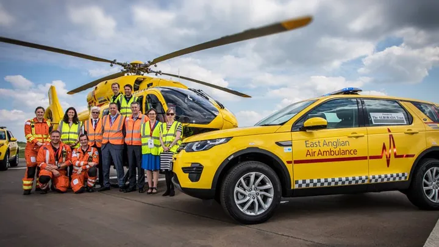
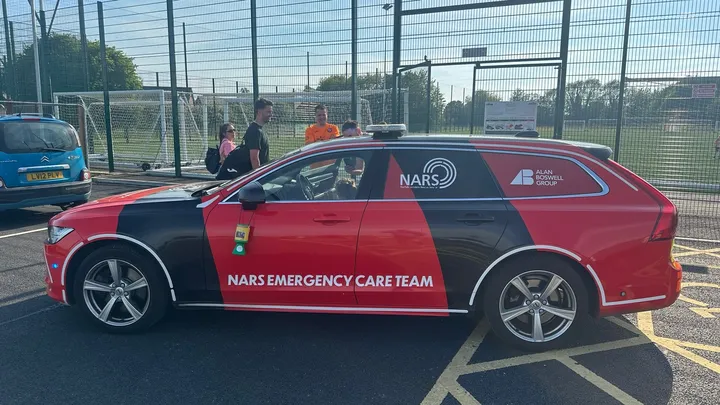

Charity
We appreacite any donations to our chosen charity parteners, East Anglian Air Ambulance and NARS. You can donate to them via the GoFundMe pages we set upnfor the respective charities below. 🙏
Support Our East Anglian Air Ambulance Fundraiser
Hi, I’m supporting this fundraiser on GoFundMe. If you can, please consider supporting by donating or sharing the link. Every bit of support makes a huge difference.
Donate or Share
Support Norfolk Accident Rescue Service (NARS)
We’re also proud to support NARS — a team of volunteer critical care responders. Your help keeps them on the road and saving lives. Please consider donating or sharing.
Donate or Share